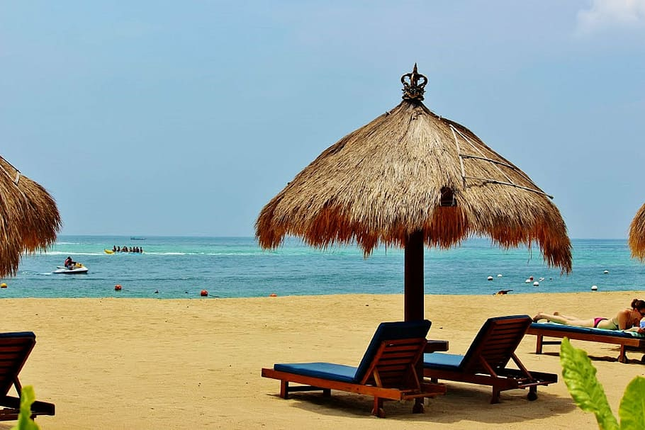

I Nyoman Suwastika | NL sprekende gids op Bali, Indonesia
Wilt u een bestelling plaatsen en onze diensten raadplegen,
klik dan op onderstaande knop!
Order Now !
Laat ik mij eerst aan u voorstellen: Mijn naam is ik Nyoman Suwastika, mijn bijnaam is Komang of Ko. Ik ben geboren op Bali, daarom is mijn naam ¨Komang¨. Voor ons betekent de naam de derde geboorte in het gezin of het derde kind. Ik ben op 9 december 1977 geboren in een klein dorpje in het westen van Bali Ik ben nu getrouwd en woon in Denpasar City, Bali met mijn Vrouw en twee kinderen. Ik heb een jaar met mijn gezin in Nederland gewoond en daar heb ik Nederlands geleerd. Nadat ik vanuit Nederland naar Bali terugkeerde, werd ik Nederlandstalige gids. Ik geniet van mijn werk als gids.
Niet alleen omdat ik er roepia mee kan verdienen, maar ook omdat ik mijn kennis van het Nederlands altijd kan inzetten en mijn (ons) mooie eiland als toeristische trekpleister kan laten zien. Bali staat niet alleen: de vakantieoorden Kuta, Sanur of Nusa Dua. Er zijn nog veel meer mooie plekken op dit eiland waar weinig tot geen toeristen komen. Neem contact met mij op via deze website voordat u naar Bali komt. We kunnen dan afspraken maken en Ik laat je de mooiste plekken op mijn eiland zien.
Ubud is een van de subdistricten in het regentschap Gianyar. Ubud staat naast Kuta bekend als toeristisch gebied. Een van de aangeboden reizen is cultureel toerisme. Dit culturele toerisme ontwikkelt zich dankzij de rol van Puri Ubud als toeristische actor.
Nusa Dua-strand op Bali Het heeft wit zand, heel kalm zeewater, de golven zijn niet zo hard, het water is ondiep en zeer geschikt om in te zwemmen. Daarom zijn de stranden van Nusa Dua zeer geschikt voor gezinsvakantieplekken op Bali. Bijna elke dag is de strandlocatie Nusa Dua altijd druk met bezoekers, vooral in de middag.
Een van de unieke dingen aan Lake Beratan die de meeste meren niet hebben, is het bestaan van een tempel midden in het meer. Deze tempel ziet eruit alsof hij op water drijft. De tempel in het midden van het Beratanmeer heet de Ulun Danu-tempel.

Pura Luhur Uluwatu is een compleet pakket op één toeristische locatie. Naast het kijken naar de kolossale Kecak-dansvoorstelling en het wachten op de zonsondergang, kunnen toeristen nog steeds op jacht naar natuurschoon als ze hier van 's morgens tot' s avonds komen. Ze kunnen een rondleiding krijgen door het tempelgebied en de omliggende heuvels.

Gallery 1

Gallery 2

Gallery 3

Gallery 4